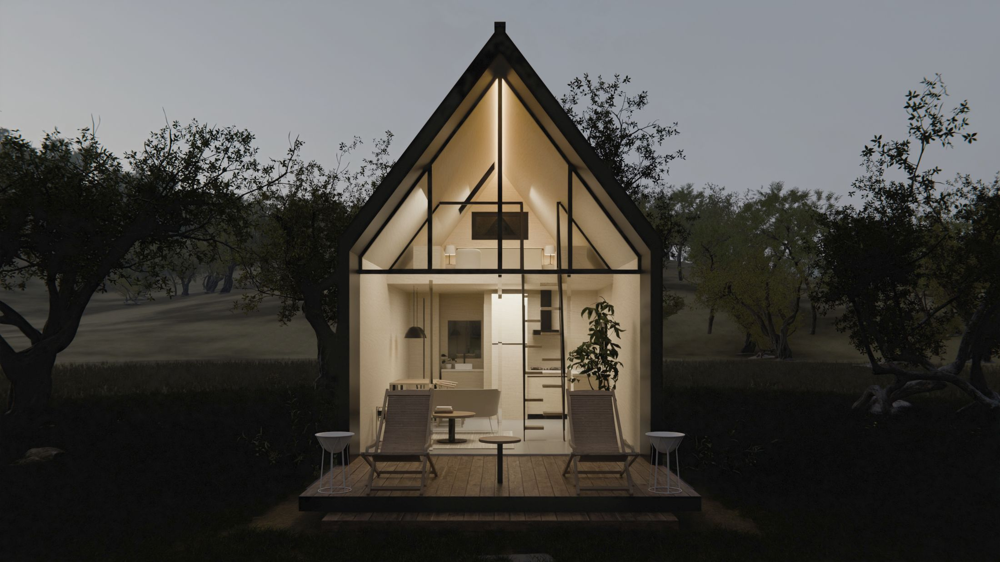
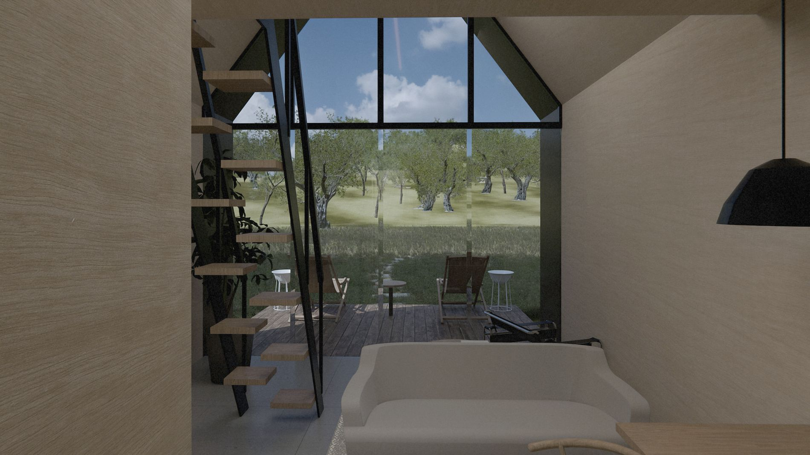
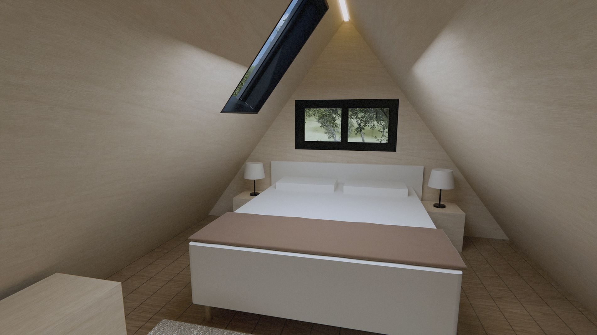
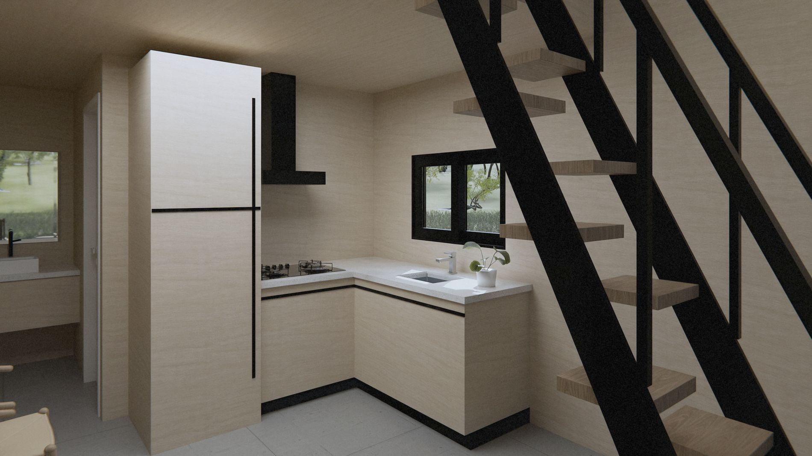

obras / chalés
Tiny House

39 m² em duas águas, com a telha dobrando da cobertura para a parede.
Uma casca de telha metálica de junta elevada, sem beiral, emoldurada por um portal preto. A frente é toda de vidro e abre para o deck.
No térreo ficam sala, cozinha e banho. O loft de dormir fica sobre a sala, com uma claraboia em cima da cama e acesso por escada de degraus alternados.
- Local
- Sorocaba · SP
- Área
- 38,57 m²
- Forma
- Duas águas a 53°
- Fechamento
- Telha metálica de junta elevada em parede e cobertura
- Escopo
- Projeto de arquitetura
- Etapa
- Projeto
Fachadas


Interiores





